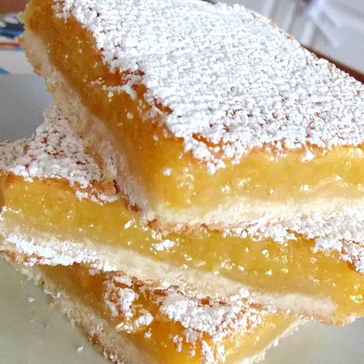

Lemon Squares

Crust Ingredients
- 2 Cups all-purpose flour
- 1 Cup cold butter
- 1/2 Cup confectioners' sugar
Custard Ingredients
- 2 Cups white sugar
- 4 eggs
- 1/4 Cup all-purpose flour
- 1/4 Cup lemon juice, or more to taste
- 1 Teaspoon baking powder
- 1 Teaspoon lemon zest, or to taste (Optional)
- Confectioners' sugar for dusting
Directions
- Preheat oven to 350 degrees F(175 degress C). Spray a 9x13-inch baking dish with cooking spray.
- Process 2 cups flour, butter, and 1/2 cup confectioners' sugar in a foood processor until mixture resembles coarse crumbs; press into the prepared baking dish.
- Bake in the preheated oven until the edges of the crust are golden brown, 18 to 22 minutes. Cool crust to room temperature.
- Beat white sugar, eggs, 1/4 cup flour, lemon juice, baking powder, and lemon zest together in a bowl using an electric mixer until light abd fluffy; pour onto the cooled crust.
- Bake in the oven until custard is set, 25 to 28 minutes. Cool lemon squares completely; dust the top with more confectioners' sugar.